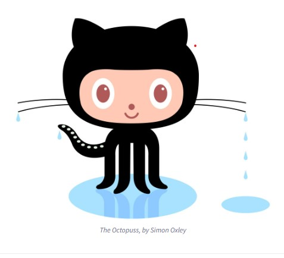

| GitHub Q & A |
Definitions |
| What is a version control system? |
A version control system, also known as source control, is the practice of tracking and managing changes to software code. These systems help software teams manage changes to source code over time, facilitating faster and smarter work in development environments. |
| What is Git? |
Git is an open-source distributed version control system used for tracking changes in source code during software development. It's designed for coordinating work among programmers, but it can be used to track changes in any set of files. |
| What is GitHub? |
GitHub is a web-based hosting service for version control using Git. It provides a platform for software development and version control using Git and offers various collaboration features. |
| What is the difference between Git and GitHub? |
Git is a version control system tool that manages and stores revisions of projects, whereas GitHub is a cloud-based platform built around the Git tool. GitHub is used for storing projects that use Git and for collaborating with other users. |
| Who started GitHub and how was it started? |
GitHub was developed by Chris Wanstrath, P.J. Hyett, Tom Preston-Werner, and Scott Chacon using Ruby on Rails and started in February 2008. |
| What company owns it now? |
As of the latest information, GitHub is owned by Microsoft. |
| How much does a GitHub account cost? |
GitHub offers various plans, including a free plan with unlimited public/private repositories, automatic security and version updates, and community support. There are also paid plans with additional features. |
| What is the Octocat? |
The Octocat is the mascot of GitHub. It's a cat-like creature with five tentacles and represents GitHub in various creative forms. |
